Популярні бренди та моделі графічних планшетів
Wacom
Wacom - провідний японський виробник графічних планшетів та перових дисплеїв, продукція якого є індустріальним стандартом для цифрових художників, дизайнерів та ретушерів. Пристрої компанії використовують запатентовану технологію електромагнітного резонансу, завдяки чому стилуси (пера) працюють без батарейок та заряджання.
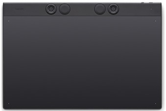
Wacom Intuos Pro
Еталон для ретушерів та ілюстраторів. Має найкращу точність пера Pro Pen 2 та вбудований Bluetooth. Його поверхня має змінну текстуру, що дозволяє налаштувати силу тертя під ваш індивідуальний стиль малювання.
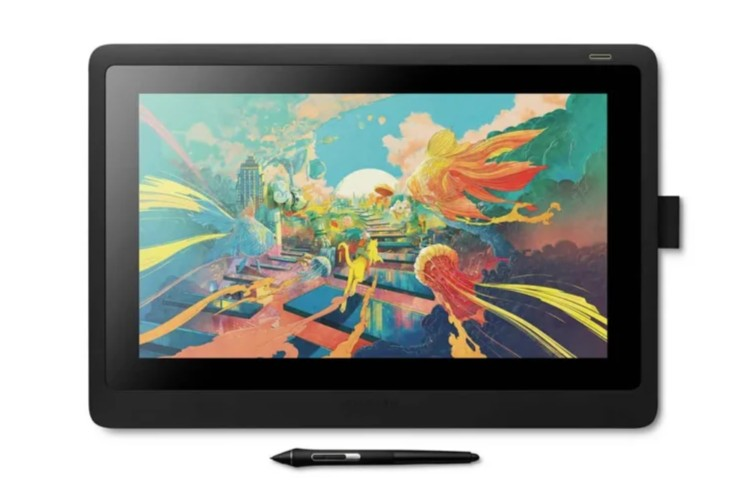
Wacom Cintiq 16
Найдоступніший професійний монітор від Wacom. Його перевага у текстурованому склі, яке дарує відчуття малювання на папері. Вбудовані складні ніжки дозволяють встановити планшет під комфортним кутом 19° для тривалої роботи без втоми.
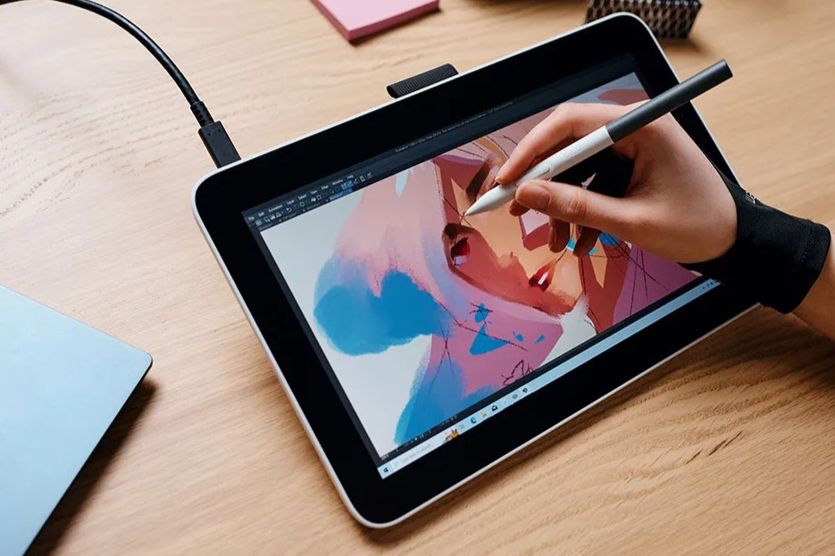
Wacom One
Ідеальний для нотаток та початківців. Головною перевагою є можливість роботи з Android-пристроями. Екран майже не відблискує на сонці, що робить його зручним для використання у добре освітлених офісах або біля вікна.

Wacom Intuos S
Максимально компактний та надійний "вхідний квиток" у світ цифрового малювання. Завдяки легкій вазі та тонкому корпусу він ідеально вміщується у сумку для ноутбука, що зручно для подорожей.
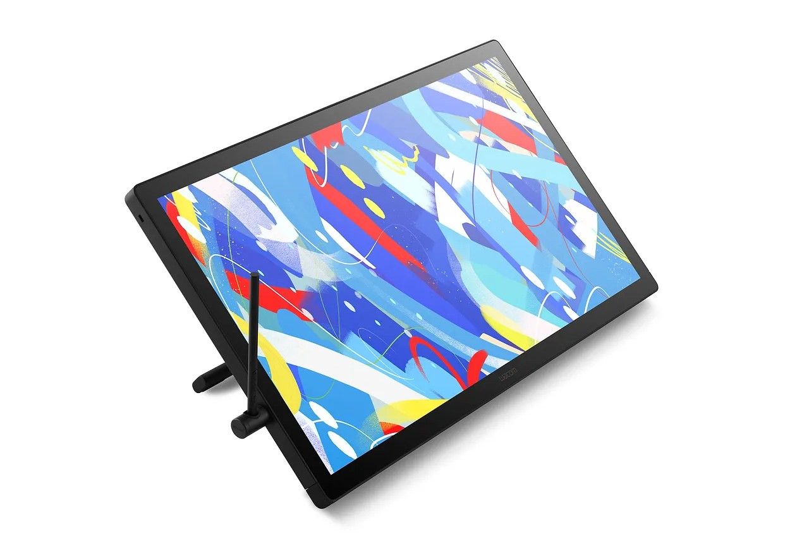
Wacom Cintiq Pro 24
Потужна станція з 4K-роздільною здатністю. Створений для великих проєктів та ідеальної передачі кольору. Величезна робоча область дозволяє тримати відкритими всі панелі інструментів Photoshop, не закриваючи при цьому саме полотно.
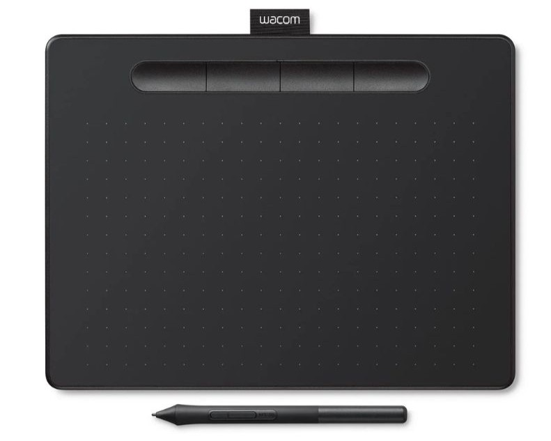
Wacom Intuos M
Професійний стандарт з пером Pro Pen 2, що забезпечує найвищу точність ліній. Має вбудований Bluetooth та підтримку жестів Multi-touch. Текстура поверхні нагадує папір, що робить процес малювання природним.
Huion
Huion - це провідний світовий бренд графічних планшетів та сенсорних моніторів, заснований у 2011 році в Шеньчжені. Компанія спеціалізується на створенні доступних цифрових інструментів для малювання, які конкурують за функціональністю з преміальними брендами, такими як Wacom.
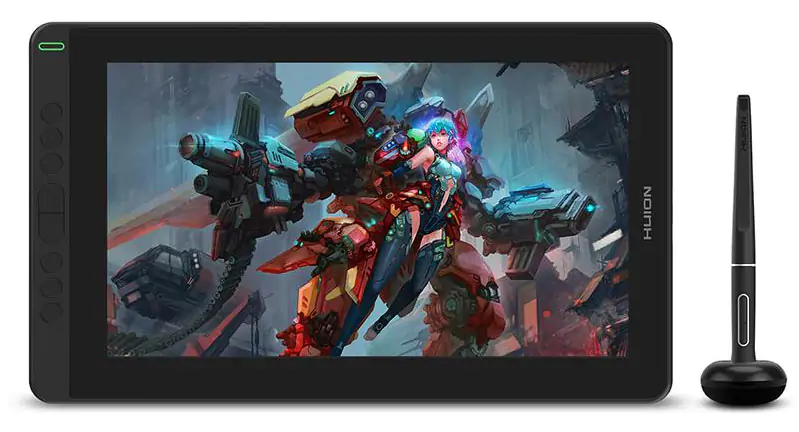
Kamvas 13
Яскравий дисплей з охопленням кольорів 120% sRGB, що забезпечує насиченість малюнків. Може живитися безпосередньо від ноутбука через кабель USB-C. Доступний у кількох кольорах корпусу для персоналізації робочого місця.

Kamvas 16
Поєднує великий 15.6-дюймовий екран з дуже тонким і легким корпусом. Повністю ламінований дисплей зводить паралакс до мінімуму. Ідеальний для тих, кому потрібно багато простору для малювання, але важлива мобільність.

Inspiroy H640P
Один із найбільш популярних бюджетних планшетів з пасивним пером. Робоча поверхня стійка до подряпин, а дизайн виглядає дуже мінімалістично. Найкращий вибір для перших кроків у цифровій графіці без великих витрат.

Kamvas Pro 20
Має велику діагональ та 16 кнопок швидкого доступу, розташованих з обох сторін. Антивідблискове скло захищає очі при тривалій роботі. Добре підходить для стаціонарної роботи в студії або вдома.

HS610
Особливістю є сенсорне кільце, яке дозволяє плавно зумувати полотно або змінювати розмір пензля. Підтримує підключення до телефонів та планшетів на базі Android. Зручна ергономіка клавіш дозволяє майже не користуватися клавіатурою.
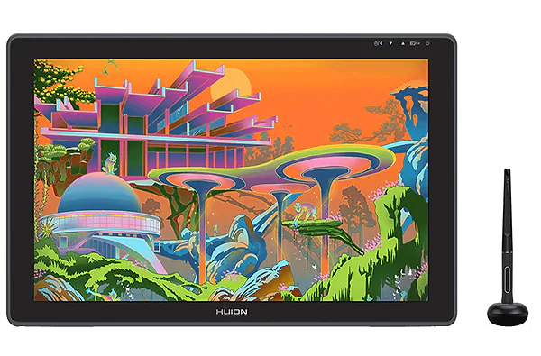
Kamvas 22
Масивний монітор з регульованою підставкою в комплекті для вибору ідеального кута нахилу. Має додатковий USB-хаб для підключення іншої периферії безпосередньо до планшета. Забезпечує широкий простір для творчості та зручну роботу в складних редакторах.
XP-Pen
XP-Pen - це провідний світовий бренд графічних планшетів та дисплеїв, заснований у 2005 році, який спеціалізується на інноваціях для цифрових художників. Продукція компанії поділяється на кілька основних серій: Artist (дисплеї для малювання), Deco (графічні планшети без екрана) та інноваційну серію Magic (автономні пристрої).
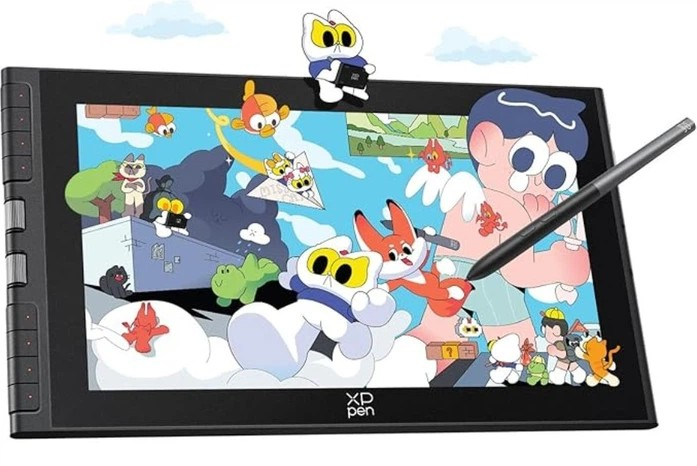
Artist 12
Дуже компактний графічний монітор з сенсорною панеллю для керування. В комплекті йде зручний пенал для зберігання пера та наконечників. Підходить для художників, які часто працюють поза межами дому.
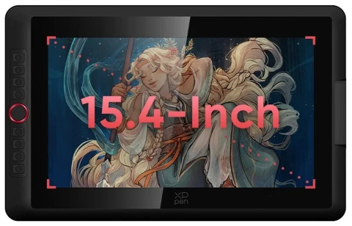
Artist 15.6
Класичний графічний монітор з оптимальним розміром екрана для більшості завдань. Має зручний інтерфейс підключення "3-в-1" для зменшення кількості кабелів. Популярний завдяки високій яскравості та доступній ціні в порівнянні з аналогами.

Deco 01 V2
Велика робоча площа та підтримка нахилу пера роблять його універсальним інструментом. Кути планшета підсвічуються, що полегшує роботу в нічний час. Це один із найбільш функціональних безекранних планшетів у своїй ціновій категорії.
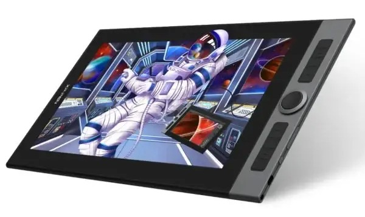
Artist Pro 16
Перша модель з інноваційним чипом X3, який значно підвищує чутливість пера. Має стильний алюмінієвий корпус та подвійне колесо керування. Забезпечує професійну якість малювання завдяки повній ламінації екрана.

Deco Pro M
Дизайнерський планшет з унікальним механічним та сенсорним коліщатком. Корпус виготовлений з алюмінію, що гарантує міцність та довговічність. Його ергономіка була відзначена престижними світовими нагородами у сфері дизайну.
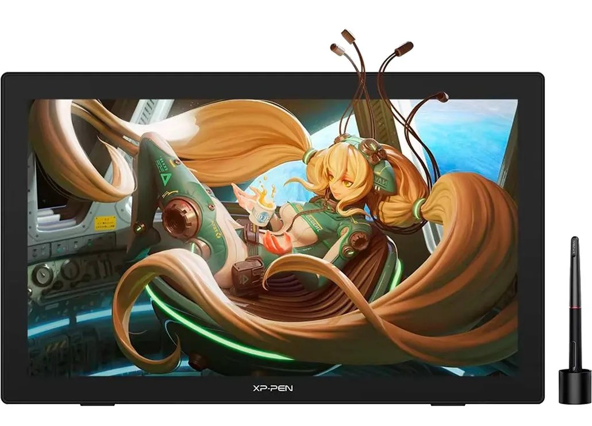
Artist 24
Має високу 2K роздільну здатність, що робить зображення неймовірно чітким на великій діагоналі. Великий екран дозволяє бачити найдрібніші деталі без постійного зумування. Це потужний інструмент для професійної ретуші та цифрового живопису.
Порівняння всіх моделей
| Модель | Бренд | Тип | Рівні натиску | Нахил пера | Особливості / Екран |
|---|---|---|---|---|---|
| Intuos Pro | Wacom | Без екрану | 8192 | Так | Професійне перо Pro Pen 2, Bluetooth |
| Cintiq 16 | Wacom | З екраном | 8192 | Так | Full HD, антивідблискове покриття |
| Wacom One | Wacom | З екраном | 4096 | Так | Full HD, підтримка Android та iOS |
| Intuos S | Wacom | Без екрану | 4096 | Ні | Компактний розмір, легка вага |
| Cintiq Pro 24 | Wacom | З екраном | 8192 | Так | 4K роздільна здатність, 99% Adobe RGB |
| Intuos M | Wacom | Без екрану | 4096 | Ні | Оптимальний розмір для моніторів 24" |
| Kamvas 13 | Huion | З екраном | 8192 | Так | Живлення через USB-C, 120% sRGB |
| Kamvas 16 | Huion | З екраном | 8192 | Так | Тонкий корпус 12 мм, Full HD |
| Inspiroy H640P | Huion | Без екрану | 8192 | Ні | 6 експрес-клавіш, пасивне перо |
| Kamvas Pro 20 | Huion | З екраном | 8192 | Так | Матове скло, 16 клавіш швидкого доступу |
| HS610 | Huion | Без екрану | 8192 | Так | Сенсорне кільце, сумісність з Android |
| Kamvas 22 | Huion | З екраном | 8192 | Так | Великий екран, два порти USB-C |
| Artist 12 | XP-Pen | З екраном | 8192 | Так | Компактний, сенсорна панель керування |
| Artist 15.6 | XP-Pen | З екраном | 8192 | Так | Full HD IPS екран, бюджетний флагман |
| Deco 01 V2 | XP-Pen | Без екрану | 8192 | Так | Підтримка нахилу пера 60 градусів |
| Artist Pro 16 | XP-Pen | З екраном | 8192 | Так | Новий чип X3, алюмінієвий корпус |
| Deco Pro M | XP-Pen | Без екрану | 8192 | Так | Подвійне колесо (механічне + тачпад) |
| Artist 24 | XP-Pen | З екраном | 8192 | Так | 2K QHD роздільна здатність, велика площа |